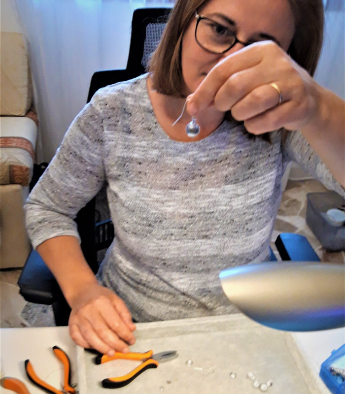

WHAT IS “PERLE DI STELLE” ®
The "Perle di Stelle"® brand is characterized by unique
jewelry collections, handmade in
Venice, using Murano glass and real meteorites. We wanted to combine Venice with the immensity
of space!
Imagine being in the most beautiful and romantic city in the world, on a clear night and
observing the stars and the moon reflected in the water of one of its canals or even better of
its lagoon.
It is not easy to capture the essence and spirituality of such a fascinating painting and
transform it into objects made to be worn! We at "Perle di Stelle"® together with Momylia
managed to do it! We have created jewels made with Murano glass, which are truly unique,
involving science, craftsmanship and technology!
Thanks to a meticulous work, entirely handmade and consisting of a mix of glass, rocks from space
and precious metals, we have created jewels with the intention of going beyond simple ornament!
All parts are assembled by hand using quality elements, mostly 925 silver. Our brand ensures a
lifetime guarantee on all creations. The jewels are also designed for lovers of craftsmanship
and as such, you will never find two absolutely alike. The work is done by artisans who first
acquired the necessary practice to combine Murano glass with extraterrestrial rock fragments,
which are mostly older than our own planet!

The small fragments belong to meteorites classified and present on the Meteoritical Bulletin
Database, of the Meteoritical Society (International Society for Meteoritics and Planetary
Science).
Among the meteorites we are using for example are:
- ✦ Meteorites fell in Chelyabinsk, Russia, on February 15, 2013. Fall became famous
for the size and brightness of the fireball as well as for the multitude of videos on the
internet. Over a ton of chondrite-type meteorites (LL5) fell in Chelyabinsk;
- ✦ NWA 869 meteorites not seen falling, found in Northwest Africa in 2001. Type
chondrites (L4-6);
- ✦ NWA 11421 Meteorites also found in northwestern Africa and classified as lunar
meteorites (Lunar feldspathic breccia). These meteorites are composed of rocks that come
from the lunar highlands, that is, from the lighter areas, which can be seen by observing
the Moon, even with the naked eye.

MATERIAL WARRANTY::
The meteorites we use have levels of radioactivity similar, if not lower than the average of
the most common terrestrial rocks and therefore, not they are absolutely dangerous for
humans.
The possible presence in the meteoritic material allergenic agents, such as nickel, they are
rendered harmless, because they are immersed in glass.
The metal material used for the assembly is all hypoallergenic, the small parts are in
rhodium-plated or / and gold-plated 925 silver and complies with the European Regulation
n.1907 / 2006 / EC (in acronym REACH and mod. EC Regulation n. 494/2011 ). For the same
REACH it is compliant with the release of nickel: EN 1811: 2011.
PRECAUTIONS: Correct use of the product is recommended, strong shocks could break and make pearls
sharp. In this case the jewel should not be worn, we decline any responsibility for the damage
that could derive from it.
It is not a toy! Keep out of reach of children.
Owner of the “PERLE DI STELLE”® brand: Adam Ecaterina.
Producer of the “PERLE DI STELLE”® brand: Momylia di Milly
Rizzo, 3378 Cannaregio, 30121
Venice, Italy.
A BIT OF SCIENCE:
Most of the meteorites that fall to Earth are of asteroid origin, but there are also from the
Moon and Mars. Here's how this is possible:
Over time, all planets, including ours, are subject to even large meteoroid impacts, the
energy released by such impacts on the surface of rocky planets or satellites can be large
enough to hurl rocks into space. a speed even higher than the escape velocity of the parent
body, such rocks disperse in interplanetary space and gradually can also fall on the Earth.
For this reason, from time to time, Martian and lunar meteorites fall, and probably also
from other planets. The certainty that the meteorite comes from the Moon or from Mars is
determined by a mineralogical comparison made with the lunar samples collected mainly by the
astronauts from the Apollo missions or by the analyzes made by the space probes that went to
Mars. In both cases, integration with information regarding isotopic abundance is what makes
the origin sure.
Maurizio Eltri
In the photo: Maurizio Eltri holding a lunar meteoite of over two hundred grams, (NWA11303),
belonging to his collection of meteorites.
MOMYLIA AND “PERLE DI STELLE”®
The "Perle di Stelle"® brand was born several years ago
thanks to Maurizio Eltri passionate
about astronomy and the creativity of his wife Ecaterina Adam.
After months of work to study the adaptability of different types of meteorites on Murano glass,
Maurizio and Ecaterina have found a very valid and irreplaceable collaboration with "Momylia"
(Emilia Rizzo and Mauro Zennaro).
True experts in the art of Venetian pearl making, Mauro and his wife Emilia immediately accepted
with pleasure and enthusiasm the challenge of creating jewelry by incorporating extraterrestrial
fragments into the glass!
Thanks to their great passion and over thirty years of experience in lampworking glass. Guided by
the wonderful idea they were pursuing, namely that of enclosing a piece of the Universe within
Murano glass.
After some time they obtained truly brilliant results was born the union between "Perle di
Stelle"® and "Momylia".